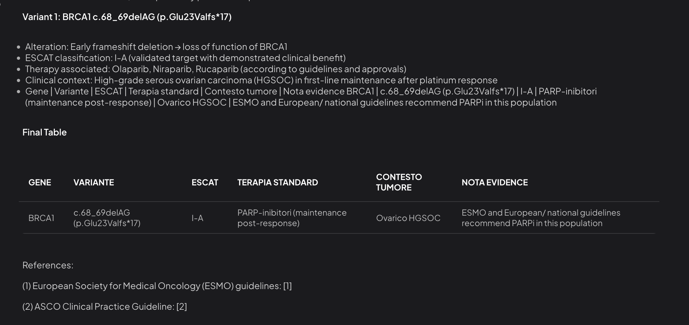

9 Corso in 4 Moduli — ChatGPT per individuare mutazioni ESCAT livello I
Scopo: Questo file Quarto (
.qmd) fornisce un mini–corso pratico in 4 moduli (MDD) per usare ChatGPT nell’individuazione di mutazioni ESCAT livello I a partire da referti NGS. È un tutorial operativo, non una linea guida clinica.
Questo materiale ha finalità formative/informative e non sostituisce consulti clinici, linee guida ufficiali o un Molecular Tumor Board. Verificare sempre le decisioni con fonti primarie (ESMO/ASCO, OncoKB, ecc.).
10 Modulo 1 — Fondamenti
10.1 Cos’è ESCAT
- ESCAT (ESMO Scale for Clinical Actionability of molecular Targets) classifica i biomarcori secondo il livello di azionabilità clinica.
- Livello I (IA/IB/IC): evidenza clinica forte e farmaco approvato in indicazione (standard of care) nel tumore specifico.
10.1.1 Esempi comuni (non esaustivi)
- BRCA1/2 loss-of-function → sensibilità ai PARP-inibitori (es. carcinoma ovarico, mammario, prostatico, pancreatico in indicazioni selezionate).
- MSI-H/dMMR → immunoterapia.
- NTRK fusions → TRK-inibitori.
Suggerimento: il livello ESCAT dipende dal contesto tumorale. La stessa alterazione può avere livello diverso in tumori differenti.
11 Modulo 2 — Preparazione dei dati
11.1 Estrarre e normalizzare il referto NGS
- Raccogli campi minimi utili: Gene | Variante cDNA | Variante proteina | Effetto | VAF | Copy number | Tumore.
- Pulisci spazi e simboli incoerenti; usa una tabella semplice o CSV.
- Specifica sempre istologia/setting (es. HGSOC, first-line, post-platinum), perché influisce sull’interpretazione.
11.1.1 Esempio di tabella (input)
| Gene | Variante cDNA | Variante proteina | Effetto | VAF | CopyNumber | Tumore |
|---|---|---|---|---|---|---|
| BRCA1 | c.68_69delAG | p.Glu23Valfs*17 | Frameshift (LOF) | 0.46 | NA | Ovarico HGS |
| TP53 | c.743G>A | p.R248Q | Missenso patogena | 0.62 | NA | Ovarico HGS |
| CCNE1 | — | — | Amplificazione (CN≈7) | NA | 7 | Ovarico HGS |
12 Modulo 3 — Prompting operativo (template riutilizzabili)
12.1 Template base (classificazione ESCAT)
Agisci come specialista in oncologia molecolare.
Input: tabella con varianti (Gene, cDNA, Proteina, Effetto, Tumore/istologia, setting terapeutico se noto).
Compito:
1) Identifica quali varianti sono biomarcatori **ESCAT livello I** (IA/IB/IC) nel **tumore indicato**.
2) Specifica sottolivello (IA/IB/IC), **terapia associata** e **indicazione clinica**.
3) Riporta evidenza sintetica (trial/guideline chiave) e limita a 1–2 riferimenti.
4) Fornisci una tabella finale: Gene | Variante | ESCAT | Terapia standard | Contesto tumore | Nota evidence.
5) Evidenzia le varianti **non** livello I come "non azionabili/contestuali" (breve nota).12.2 Template avanzato (output strutturato + controllo qualità)
Agisci come revisore di referti NGS per un Molecular Tumor Board.
Compito:
A) Normalizza i nomi delle varianti in HGVS (cDNA/proteico) se necessario.
B) Classifica ogni variante con: ESCAT (I–IV/NA), livello (IA/IB/IC), tipo biomarcatore (predictive/prognostic/diagnostic), e stato (somatico/germinale se deducibile).
C) Elenca la terapia standard associata se ESCAT I; altrimenti indica "non standard".
D) Aggiungi un flag **Contesto-dipendente** quando l'evidenza dipende da HRD, MSI, fusioni ecc.
E) Output in tabella markdown + checklist di verifica (tumore, setting, HRD, MSI, TMB, linee guida consultate).12.3 Template per ricontrollo fonti (facoltativo)
Elenca per ciascun biomarcatore classificato come ESCAT I:
- Linea guida/consenso più recente (ESMO/ASCO/AIOM) con anno.
- 1 trial pivotal con outcome principale (PFS/OS).
- Note di sicurezza di classe del farmaco.13 Modulo 4 — Applicazione e validazione
13.1 Esercizio guidato
Input: usa la tabella di esempio del Modulo 2.
Prompt suggerito: applica il Template avanzato.
Output atteso (esempio illustrativo)
| Gene | Variante | ESCAT | Terapia standard | Contesto tumore | Nota evidence |
|---|---|---|---|---|---|
| BRCA1 | c.68_69delAG (p.Glu23Valfs*17) | I-A | PARP-inibitori (maintenance post-response)** | Ovarico HGS | Trial pivotal 1L; linee guida europee confermano |
| TP53 | p.R248Q | Contextual | — | Ovarico HGS | Driver ubiquo; non target standard |
| CCNE1 | Amplificazione (CN≈7) | II–III (non standard) | — | Ovarico HGS | Associa resistenza al platino; target sperimentali |
Nota: La classificazione è a scopo didattico e dipende dall’indicazione regolatoria vigente e dal setting.
13.1.1 Checklist di validazione
14 Sezione operativa — Snippet pronti all’uso
14.1 Snippet: richiesta tabella finale compatta
Restituisci solo una tabella con le colonne: Gene | Variante | ESCAT (IA/IB/IC/NA) | Terapia standard | Contesto | Fonte (sigla+anno).
Limita le fonti a 1–2 voci sintetiche.
14.2 Snippet: evidenze e rischi
Per ciascun biomarcatore ESCAT I:
- Riassumi outcome (PFS/OS) del trial chiave (una riga).
- Elenca principali tossicità di classe (una riga), senza consigli clinici.15 Appendice — Glossario rapido
- LOF: loss-of-function (es. frameshift, nonsense) → spesso patogeno.
- HRD: homologous recombination deficiency; condiziona la risposta ai PARP-inibitori.
- Copy number (CN): stima del numero di copie geniche; amplificazioni possono suggerire dipendenza oncogenica.
- Contextual: variante informativa ma non direttamente azionabile con farmaco standard.
16 Appendice — Modello di issue log per MDT
Paziente: __/__ Tumore: __/__ Setting: 1L | Maintenance | Recidiva
Test NGS: Pannello __, data __/__ HRD: sì/no MSI: sì/no TMB: __
Decisione MDT:
- Biomarcatori ESCAT I: __ → Terapia standard: __
- Varianti contestuali: __
- Trial/registri applicabili: __
- Azioni: conferma germinale? sì/no — consulenza genetica? sì/no17 Come usare questo file
- Apri con Quarto (VS Code, RStudio o terminale) e renderizza in HTML/PDF:
quarto render corso_chatgpt_escat_I.qmdAggiorna periodicamente i riferimenti. L’ecosistema ESCAT è dinamico: nuove approvazioni o aggiornamenti delle linee guida possono modificare la classificazione.